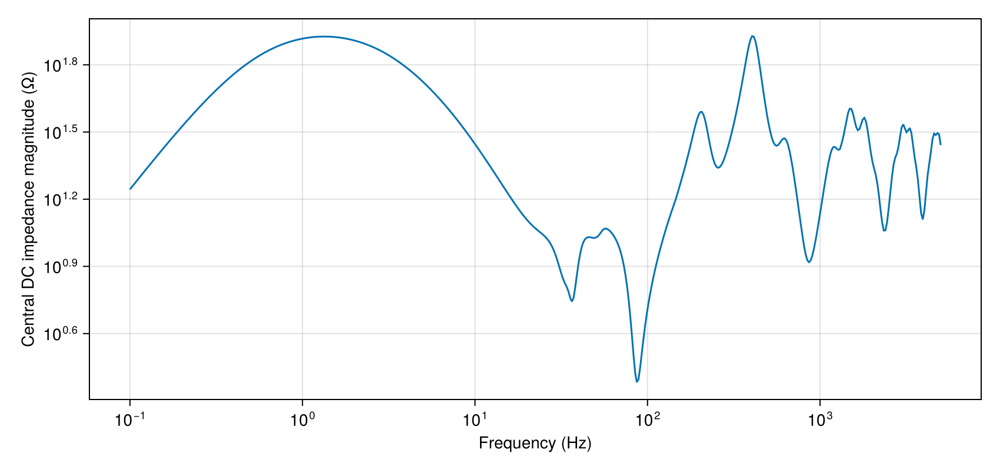
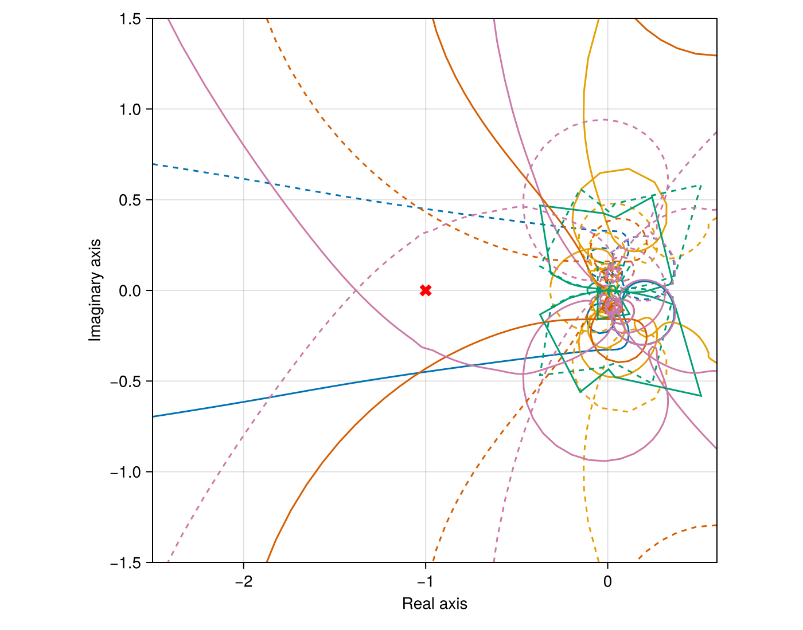

Three-terminal DC energy hub
The energy hub transfers wind power between AC grids through a three-terminal DC system. Its PSCAD model is available in Z-tool. The impedance at the central DC node includes cable propagation and converter control dynamics.
using PowerImpedance
using CairoMakie
voltage = 220 / sqrt(3);
transformer_base = 333^2 / 1000;
compensation_inductance = 3 * voltage^2 / (2π * 50 * 50);MMC controls
Each MMC uses a 333/220 transformer with 0.18 pu leakage reactance and 0.005 pu resistance. The arms contain 400 submodules with 10 mF capacitance and 50 mH inductance.
electrical = ElectricalMMC(turnsRatio = 333/220, Lᵣ = 0.18 * transformer_base / (2π * 50),
Rᵣ = 0.005 * transformer_base);The MMC measurements pass AC voltage, AC current and DC voltage directly to the controllers.
mmc_measurement = Measurement();The active-power loop sets the d-axis current reference of MMC1 and MMC2.
power_control = OuterActivePowerControl(pi_ctrl = PIControl(Kp = 0.1, Ki = 31.4159));The DC-voltage controller at MMC3 sets the d-axis current reference to balance DC power.
dc_control = OuterActiveVdcControl(pi_ctrl = PIControl(Kp = 5, Ki = 15));Reactive-power control sets each MMC's q-axis current reference.
reactive_control = OuterReactiveQControl(pi_ctrl = PIControl(Kp = 0.1, Ki = 31.4159));The AC current loop tracks the references through the arm and transformer inductances.
current_control = InnerCurrentPIControl(pi_ctrl = PIControl(Kp = 0.7691, Ki = 522.7654),
activate_ω_c_multiplication = false);Circulating current suppression controls the second-harmonic current between the arms.
internal_control = ΣdqzControlTEC(
ccsc = CirculatingCurrentSuppressionControl(PIControl(Kp = 0.1048, Ki = 48.1914)));The PLL follows the terminal-voltage angle for each grid-following MMC.
sync = PLLSynchronization(pi_ctrl = PIControl(Kp = 0.28, Ki = 12.5664));Modulation sets the submodule insertion indices from the commanded arm voltages.
modulation = UncompensatedModulation();
pq_control = ΔdqControlGFL(
outer_active = power_control, outer_reactive = reactive_control, occ = current_control);
vdc_control = ΔdqControlGFL(outer_active = dc_control, outer_reactive = reactive_control,
occ = current_control);Converter MMC1 injects one third of the wind farm's 700 MW into its AC grid.
MMC1 = let model = mmc(; vDC_base = 640, Sbase = 1000, vACbase_LL_RMS = 333,
elec = electrical, meas = mmc_measurement, sync = sync, delta_control = pq_control,
sigma_control = internal_control, modulation = modulation)
b = bases(model)
component(model;
delta_control = (outer_active = (p_ref = (700/3) / b.S,),
outer_reactive = (q_ref = 0.0,)),
powerflow = (; v_dc = 640 / b.v_dc,
v_ac = (voltage * sqrt(2)) / b.v_ac))
end;Converter MMC2 withdraws two thirds of the wind power from the central AC bus.
MMC2 = let model = mmc(; vDC_base = 640, Sbase = 1000, vACbase_LL_RMS = 333,
elec = electrical, meas = mmc_measurement, sync = sync, delta_control = pq_control,
sigma_control = internal_control, modulation = modulation)
b = bases(model)
component(model;
delta_control = (outer_active = (p_ref = (-1400/3) / b.S,),
outer_reactive = (q_ref = 0.0,)),
powerflow = (; v_dc = 640 / b.v_dc,
v_ac = (voltage * sqrt(2)) / b.v_ac))
end;Converter MMC3 regulates the DC voltage and exchanges power with the second AC grid.
MMC3 = let model = mmc(; vDC_base = 640, Sbase = 1000, vACbase_LL_RMS = 333,
elec = electrical, meas = mmc_measurement, sync = sync, delta_control = vdc_control,
sigma_control = internal_control, modulation = modulation)
b = bases(model)
component(model;
delta_control = (outer_active = (v_dc_ref = 640 / b.v_dc,),
outer_reactive = (q_ref = 0.0,)),
powerflow = (; p_ac = (1400/3) / b.S,
v_ac = (voltage * sqrt(2)) / b.v_ac))
end;Wind-farm converter
The two-level converter connects the wind farm through 12.32 mH and 0.03872 ohm.
wind_electrical = ElectricalTLC(Lᵣ = 0.01232, Rᵣ = 0.03872);First-order filters remove fast components from the measured AC voltage and current.
wind_measurement = Measurement(v_ac = PowerImpedance.Butterworth(order = 1, ωc = 1e4),
i_ac = PowerImpedance.Butterworth(order = 1, ωc = 1e4));The wind-farm PLL uses an 80 Hz filter and couples the voltage angle to the current controls.
wind_sync = PLLSynchronization(pi_ctrl = PIControl(Kp = 1, Ki = 31.830988618379067),
filter = PowerImpedance.Butterworth(order = 1, ωc = 2π * 80));Active-power control sets the wind converter's d-axis current reference.
wind_power = OuterActivePowerControl(pi_ctrl = PIControl(Kp = 0.01, Ki = 10));Reactive-power control sets the q-axis current reference for -150 MVAr injection.
wind_reactive = OuterReactiveQControl(pi_ctrl = PIControl(Kp = 0.01, Ki = 10));The inner current loop sets the voltage commands for the two-level converter. Modulation applies these commands directly.
wind_current = InnerCurrentPIControl(pi_ctrl = PIControl(Kp = 0.254647908947033, Ki = 0.8));
wind_limits = PowerImpedance.Limits(
P_min = 0.9 * 1000, P_max = 1.1 * 1000, Q_min = -0.5 * 1000, Q_max = 0.5 * 1000);
OWF = let model = tlc(; Sbase = 1000, vACbase_LL_RMS = 220, elec = wind_electrical,
meas = wind_measurement, sync = wind_sync, outerActive = wind_power,
outerReactive = wind_reactive, innerCurrent = wind_current,
innerVoltage = NoInnerVoltageControl(), mod = NoModulation(), limits = wind_limits)
b = bases(model)
component(model; outerActive = (p_ref = 700 / b.S,),
outerReactive = (q_ref = -150 / b.S,),
powerflow = (; v_dc = 640 / b.v_dc,
v_ac = (voltage * sqrt(2)) / b.v_ac,
p_dc = 0 / b.S))
end;Cables and AC connections
Cable CableDC12 connects the first and central DC nodes over 250 km. Its insulation separates a copper core, metallic screen and magnetic armour.
CableDC12 = cable(length = 250e3, positions = [(-0.5, 1), (0.5, 1)],
C1 = Conductor(rₒ = 24.25e-3, ρ = 1.72e-8),
I1 = Insulator(rᵢ = 24.25e-3, rₒ = 41.75e-3, ϵᵣ = 2.3),
C2 = Conductor(rᵢ = 41.75e-3, rₒ = 46.25e-3, ρ = 22e-8),
I2 = Insulator(rᵢ = 46.25e-3, rₒ = 49.75e-3, ϵᵣ = 2.3),
C3 = Conductor(rᵢ = 49.75e-3, rₒ = 60.55e-3, ρ = 18e-8, μᵣ = 10),
I3 = Insulator(rᵢ = 60.55e-3, rₒ = 65.75e-3, ϵᵣ = 2.3));Cable CableDC23 connects the central and third DC nodes over 60 km.
CableDC23 = cable(length = 60e3, positions = [(-0.5, 1), (0.5, 1)],
C1 = Conductor(rₒ = 24.25e-3, ρ = 1.72e-8),
I1 = Insulator(rᵢ = 24.25e-3, rₒ = 41.75e-3, ϵᵣ = 2.3),
C2 = Conductor(rᵢ = 41.75e-3, rₒ = 46.25e-3, ρ = 22e-8),
I2 = Insulator(rᵢ = 46.25e-3, rₒ = 49.75e-3, ϵᵣ = 2.3),
C3 = Conductor(rᵢ = 49.75e-3, rₒ = 60.55e-3, ρ = 18e-8, μᵣ = 10),
I3 = Insulator(rᵢ = 60.55e-3, rₒ = 65.75e-3, ϵᵣ = 2.3));The 60 km AC cable joins the central and third converter buses in trefoil formation. Semiconducting layers of 2 mm and 1.5 mm adjoin the main insulation.
CableAC23 = cable(
length = 60e3, positions = [(0, 1.33562), (-0.0575, 1.4322), (0.0575, 1.4322)],
C1 = Conductor(rₒ = 25.45e-3, ρ = 2.63e-8),
I1 = Insulator(rᵢ = 25.45e-3, rₒ = 50.65e-3, a = 2e-3, b = 1.5e-3, ϵᵣ = 2.3),
C2 = Conductor(rᵢ = 50.65e-3, rₒ = 52.35e-3, ρ = 22e-8),
I2 = Insulator(rᵢ = 52.35e-3, rₒ = 55.75e-3, ϵᵣ = 100),
earth_parameters = (1, 1, 1));The wind farm connects to the central bus through 10 km of the same AC cable construction.
CableAC24 = cable(
length = 10e3, positions = [(0, 1.33562), (-0.0575, 1.4322), (0.0575, 1.4322)],
C1 = Conductor(rₒ = 25.45e-3, ρ = 2.63e-8),
I1 = Insulator(rᵢ = 25.45e-3, rₒ = 50.65e-3, a = 2e-3, b = 1.5e-3, ϵᵣ = 2.3),
C2 = Conductor(rᵢ = 50.65e-3, rₒ = 52.35e-3, ρ = 22e-8),
I2 = Insulator(rᵢ = 52.35e-3, rₒ = 55.75e-3, ϵᵣ = 100),
earth_parameters = (1, 1, 1));The overhead conductors have 10 m phase spacing and 30 m height over 100 ohm metre earth.
conductors = Conductors(organization = :flat, nᵇ = 3, nˢᵇ = 1, Rᵈᶜ = 0.063,
rᶜ = 0.015, yᵇᶜ = 30, Δyᵇᶜ = 0, Δxᵇᶜ = 10, Δ̃xᵇᶜ = 0, dˢᵇ = 0, dˢᵃᵍ = 10);
groundwires = Groundwires(
nᵍ = 2, Rᵍᵈᶜ = 0.92, rᵍ = 0.0062, Δxᵍ = 6.5, Δyᵍ = 7.5, dᵍˢᵃᵍ = 10);Line OHLAC01 connects the first MMC to its external AC grid over 50 km.
OHLAC01 = overhead_line(length = 50e3, conductors = conductors, groundwires = groundwires,
earth_parameters = (1, 1, 100));Line OHLAC35 connects the third MMC to its external AC grid over 50 km.
OHLAC35 = overhead_line(length = 50e3, conductors = conductors, groundwires = groundwires,
earth_parameters = (1, 1, 100));The external grids have 0.1 ohm resistance and 5 mH inductance behind their nominal voltages.
G1 = ac_source(v = voltage * sqrt(2));
Zg1 = impedance(z = s -> 0.1 + 0.005s, conductors = 3);
G3 = ac_source(v = voltage * sqrt(2));
Zg3 = impedance(z = s -> 0.1 + 0.005s, conductors = 3);Shunt reactors absorb 50 MVAr at each end of the 60 km AC cable, with 1 ohm series resistance.
Q2 = impedance(z = s -> 1 + compensation_inductance * s, conductors = 3);
Q3 = impedance(z = s -> 1 + compensation_inductance * s, conductors = 3);
G_dc = dc_source(v = 640);
elements = (; MMC1, MMC2, MMC3, OWF, CableDC12, CableDC23, CableAC23, CableAC24,
OHLAC01, OHLAC35, G1, G3, Zg1, Zg3, Q2, Q3, G_dc);The DC cables form a chain with MMC2 at its central node. The AC cables join MMC2, MMC3 and the wind farm independently of that DC chain.
connections = (
NetworkBuilder.Bus(:AC1; ports = ((:MMC1, :ac), (:OHLAC01, :side1)), domain = ACDQ),
NetworkBuilder.Bus(:AC2;
ports = ((:MMC2, :ac), (:CableAC23, :side1), (:CableAC24, :side1), (:Q2,
:side1)), domain = ACDQ),
NetworkBuilder.Bus(:AC3;
ports = ((:MMC3, :ac), (:CableAC23, :side2), (:OHLAC35, :side1), (:Q3, :side1)),
domain = ACDQ),
NetworkBuilder.Bus(:WindAC;
ports = ((:OWF, :ac), (:CableAC24, :side2)), domain = ACDQ),
NetworkBuilder.Bus(:Grid1;
ports = ((:Zg1, :side2), (:OHLAC01, :side2)), domain = ACDQ),
NetworkBuilder.Bus(:Grid3;
ports = ((:Zg3, :side2), (:OHLAC35, :side2)), domain = ACDQ),
NetworkBuilder.Bus(:Source1; ports = ((:G1, :ac), (:Zg1, :side1)), domain = ACDQ),
NetworkBuilder.Bus(:Source3; ports = ((:G3, :ac), (:Zg3, :side1)), domain = ACDQ),
NetworkBuilder.Bus(:gnd; ports = ((:Q2, :side2), (:Q3, :side2)), domain = ACDQ),
NetworkBuilder.Bus(:DC1; ports = ((:MMC1, :dc), (:CableDC12, :side1))),
NetworkBuilder.Bus(:DC2;
ports = ((:MMC2, :dc), (:CableDC12, :side2), (:CableDC23, :side1))),
NetworkBuilder.Bus(:DC3; ports = ((:MMC3, :dc), (:CableDC23, :side2))),
NetworkBuilder.Bus(:WindDC; ports = ((:G_dc, :dc), (:OWF, :dc)))
);DC impedance and stability
Linearization uses the solved AC and DC power flow at the configured converter references.
network = NetworkBuilder.define(elements, connections;
options = (; voltageBase = voltage,
power_flow = (; is_bounded = (; bus_voltage = true),
optimizer = (; hessian_approximation = "limited-memory"))));
power_flow = compute(PowerFlowProblem(network), ACDCPowerFlow());
linearized = compute(LinearizationProblem(network, power_flow), AdmittanceLinearization());
dc_impedance = compute(
PowerImpedanceProblem(linearized.network_model;
nodes = [:DC2], frequency_range = (0.1, 5e3, 500)),
NodalImpedance());[ Info: LOCALLY_SOLVED
[ Info: Power flow converged successfully.
[ Info: Terminal operating values: Dict{Symbol, NamedTuple}(:OWF => (ac = ACPortValues(176.70831583836448, 0.27931917192987415, -700.0, 150.0), dc = DCPortValues(640.0, 700.4236663622748)), :G3 => (ac = ACPortValues(179.62924780409975, -5.770633895259213e-27, 443.26718923922954, -137.88604891260158),), :G_dc => (dc = DCPortValues(640.0, -700.4236663622748),), :MMC3 => (ac = ACPortValues(177.48182964661197, 0.22922578515479025, -229.3007700287365, 1.3661464030567597e-27), dc = DCPortValues(640.0, 229.82991439618624)), :MMC2 => (ac = ACPortValues(176.65608843458836, 0.26276123561457465, 466.6666666666667, 0.0), dc = DCPortValues(640.4012131763792, -464.4544518964748)), :MMC1 => (ac = ACPortValues(181.65462472617097, 0.11181466899220179, -233.33333333333334, -1.12051397998916e-22), dc = DCPortValues(638.6967333228492, 233.8563693529482)), :G1 => (ac = ACPortValues(179.62924780409975, -1.1481226006482209e-27, 229.64982429821654, -19.36027389925732),))
[ Info: Starting to solve for steady-state solution
[ Info: MMC steady-state solution found!
[ Info: Starting to solve for steady-state solution
[ Info: MMC steady-state solution found!
[ Info: Starting to solve for steady-state solution
[ Info: MMC steady-state solution found!
[ Info: Starting to solve for steady-state solution
[ Info: TLC steady-state solution found!The DC impedance reaches about 84 ohms near 1.35 Hz and 85 ohms near 404 Hz. Cable capacitance and series inductance produce resonances between the DC terminals, with converter dynamics at each termination. Smaller peaks appear near 45 and 57 Hz.
impedance_plot = Figure(size = (850, 400));
axis = Axis(impedance_plot[1, 1]; xlabel = "Frequency (Hz)",
ylabel = "Central DC impedance magnitude (Ω)", xscale = log10, yscale = log10);
lines!(axis, real.(dc_impedance.frequencies) ./ (2π), abs.(dc_impedance.response[1, 1, :]));
impedance_plot
The network loop gain includes the wind-farm PLL and the AC and DC connections of the MMCs. Generalized Nyquist analysis follows its eigenvalues relative to -1.
loop_gain = compute(
PowerImpedanceProblem(linearized.network_model;
frequency_range = (0.1, 5e3, 500)), LoopGain());
stability = compute(StabilityProblem(loop_gain), GeneralizedNyquist());One eigenvalue trajectory crosses the real axis to the left of -1 in the clockwise direction. The Nyquist calculation identifies an unstable response peak near 54 Hz.
nyquist = Figure(size = (700, 550));
axis = Axis(nyquist[1, 1]; xlabel = "Real axis", ylabel = "Imaginary axis",
aspect = DataAspect());
for (index, locus) in enumerate(eachcol(stability.output.eigenloci))
lines!(axis, real.(locus), imag.(locus); color = Cycled(index));
lines!(axis, real.(locus), -imag.(locus); color = Cycled(index), linestyle = :dash);
end
scatter!(axis, [-1.0], [0.0]; color = :red, marker = :xcross, markersize = 15);
xlims!(axis, -2.5, 0.6);
ylims!(axis, -1.5, 1.5);
nyquist
Back to Examples